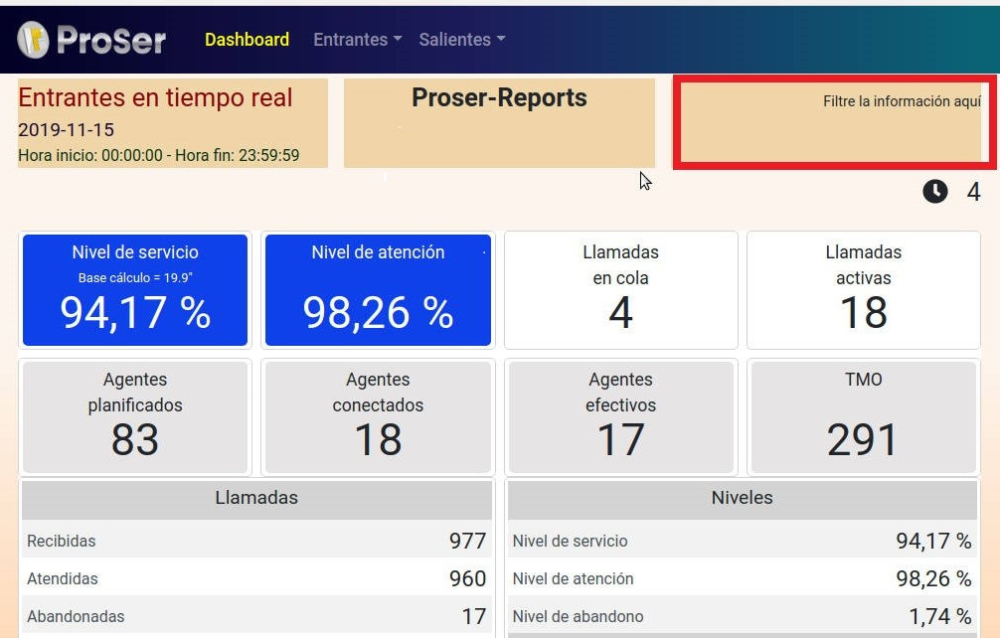
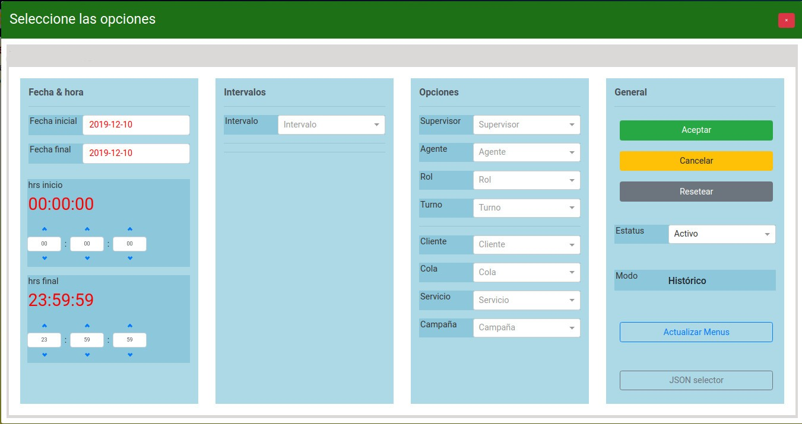

Selector
La reportería ProSer cuenta con una funcionalidad llamada “Selector”. Esta herramienta consiste en elegir y manipular datos específicos que permiten al usuario de la reportería segmentar la información que se muestra en los distintos módulos de visualización (reportes, dashboard,display) o que se exporta en los archivos de hojas de cálculo.
Acerca de la estructura establecida para el selector, es oportuno destacar que cuenta con cuatro (4) secciones de operación que de acuerdo a sus requerimientos facilitan la manipulación de los datos, pero antes que nada es necesario indicar en qué secciones el usuario puede utilizar el selector y como puede hacerlo posible.
Ahora bien, el motivo por el cual la visibilidad e implementación del selector no aplica en todas las secciones de la reportería, es debido a que ProSer es una herramienta multifuncional la cual puede ejecutar varias tareas pero no siempre requiere de un selector para facilitar el proceso de su labor. Por esta razón, el selector se encuentra activo en las secciones:
- Dashboard
- Reportes
Así pues dentro de las secciones mencionada anteriormentes el usuario puede iniciar con el proceso de selección de datos, para ello debe:
Presionar el recuadro con el escrito “Filtre la información aquí”. como se muestra en la siguiente imagen

Al pulsar el recuadro se activa el selector con las múltiples alternativas para filtrar sus datos a conveniencia.

Siguiendo el orden de ideas en relación a las opciones del selector, es prudente especificar cada una de ellas para brindar información útil para los usuarios:
Sección Fecha & Hora
En primer lugar cómo se aprecia en la imagen anexada anteriormente, el usuario puede seleccionar la fecha y hora para proceder a la segmentación de información, es decir con estos parámetro el usuario estará estableciendo la fecha (o intervalo defechas) y hora (o intervalos de horas) para filtrar la información que correspondan a la selección establecidas.
Sección Intervalos
Los intervalos son parámetros que se utilizan para filtrar el comportamiento de las llamadas o agentes en proporciones de tiempo más pequeñas. Esto permite al usuario seleccionar las medidas de tiempo disponibles para mostrar la información relacionada con el intervalo.
De igual forma al seleccionar algunos de estos parámetros como dato para procesar la partición de la información, se inhabilita la posibilidad de realizarlos por fechas. Cabe destacar que esta opción está disponible en los módulos que utilizan losintervalos como método de agrupación de la información.
Sección Opciones
Dentro de las alternativas para filtrar los datos, el usuario cuenta con una sección de opciones en la cual puede establecer un criterio específico para facilitar su búsqueda, dentro de los cuales están:
-
Supervisor
-
Agente
-
Rol
-
Turno
-
Cliente
-
Cola
-
Servicio
-
Campaña
A través de este abanico de opciones, el usuario puede filtrar la información de la vista correspondiente al ítem elegido. Por ejemplo, al seleccionar un agente en el selector del reporte de llamadas entrantes, la información que se desplegará será relacionada a las llamadas en las cuales participó ese agente en la fecha seleccionada.
Es oportuno descartar que el selector mantiene la configuración elegida, al momento de realizar una nueva búsqueda se debe establecer un nuevo patrón de selección para filtrar, puesto que de tener los mismos campos seleccionados anteriormente tendrá como resultado la búsqueda anterior
Sección General
Por último el usuario dispone de una sección general que contiene los botones con los cuales puede ejecutar las acciones de la selección:
-
Aceptar: Al presionar este botón inicia el proceso de búsqueda de acuerdo a la selección establecida.
-
Cancelar: Con este botón el usuario cancela todas las actividades que puede hacer en el selector
-
Resetear: Este botón se utiliza para restablecer el selector a su estado de iniciación, es decir al pulsar este botón los campos quedan en blanco.
-
Estatus: Este selector permite seleccionar los estados Activos e Inactivos. Las opciones mostradas corresponden al estado seleccionado.
-
Actualizar Menús: Al hacer clic sobre este botón, el usuario puede actualizar las opciones de selección a los datos más recientes.
-
JSON selector: Muestra la selección en formato JSON (aplica para desarrolladores).
En definitiva el selector de ProSer es una herramienta muy útil y fácil de manipular que tiene como objetivo principal facilitar el proceso de búsqueda en los diferentes módulos de monitoreo y estadísticas.